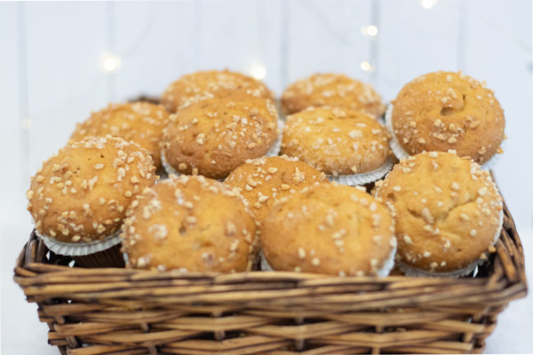

MAGDALENAS CON LECHE DE AVENA
INGREDIENTES
- 1000g Royal Cake Espelta
- 550g Huevo
- 150g Leche de Avena
- 500g Aceite
PASOS A SEGUIR
Se mezclan todos los ingredientes, excepto el aceite, a velocidad rápida durante 5 minutos, luego se incorpora el aceite a velocidad lenta y se continúa mezclando a velocidad media. Posteriormente, la mezcla se escudilla en moldes adecuados y se espolvorea con almendra granillo y azúcar antes de hornear con el horno cerrado a 185°C durante 35 minutos, utilizando el tipo de horno "Suela" sin vapor. La batidora con el accesorio de pala se utiliza durante 10 minutos en total.